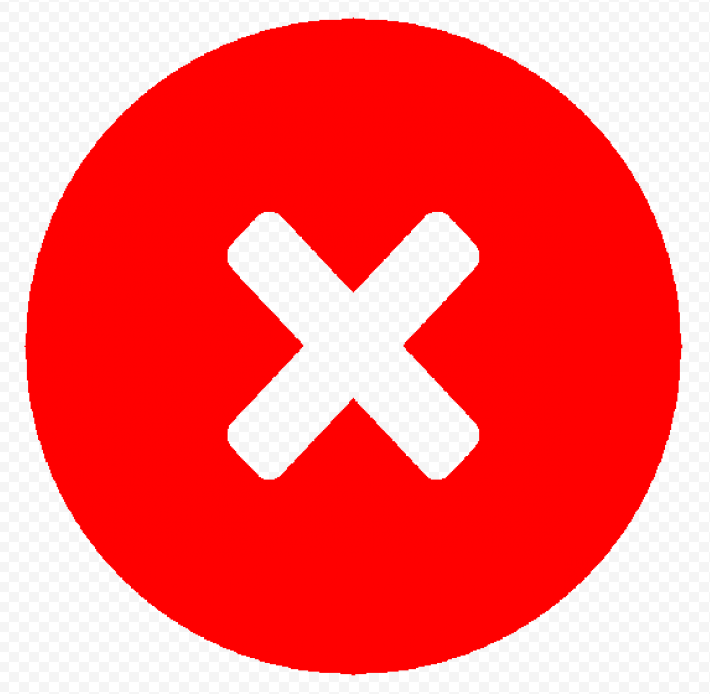

Task detail
Name: {{ task.name }}
Priority: {% if task.priority == "L" %}
{{ task.get_priority_display }}
{% elif task.priority == "M" %}{{ task.get_priority_display }}
{% elif task.priority == "H" %}{{ task.get_priority_display }}
{% endif %}Deadline: {{ task.deadline }}
Task type: {{ task.task_type }}
Tags: {% for tag in task.tags.all %} {{ tag.name }} {% endfor %}
Status: {{ task.is_completed|yesno:"Is completed,In progress" }}
{% if task.is_completed %}

{% else %}
 {% endif %}
{% endif %}
Project: {% for project in task.projects.all %}{{ project.name }} :{% endfor %}
Description: {{ task.description }}
Assignees: {% for assign in task.assignees.all %} {{ assign.first_name }} {{ assign.last_name }}( {{ assign.username }}) : {% endfor %}
{% if task in user.tasks.all %} Delete me from this task {% else %} Assign me to this task {% endif %}